למדריכים מיועדים
מופיעים בממשק לפי רמה, זמינות ואתר
המטרה בהצגה: להראות איך מדריך מקבל ליד מסודר, רואה פעילות מתאימה, ומקושר להזמנה בלי שיחות מבולגנות.

1
לקוח בוחר אתרעומק, קושי וזמן פעילות
2
התאמת מדריךלפי הסמכה וזמינות
3
בקשה נשמרתשם, טלפון, תאריך והערות